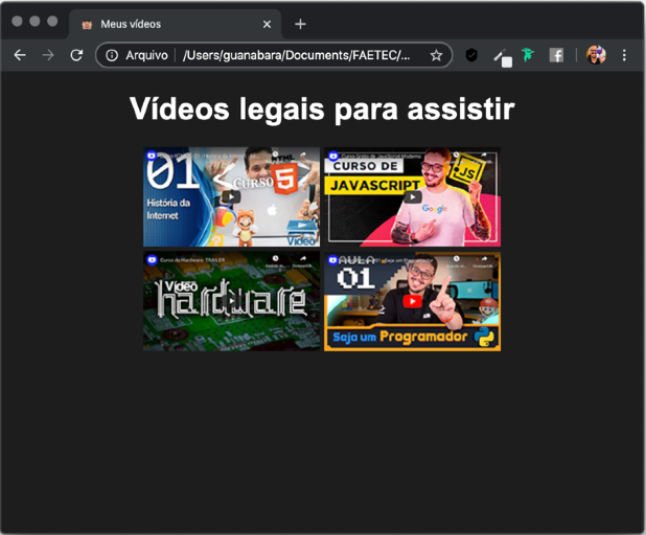
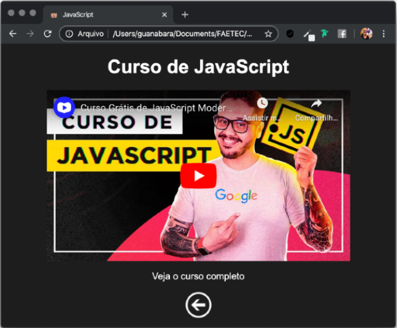

Eu tenho um desafio pra você!
Criar um site onde você possa indicar quatro vídeos legais para seu visitante poder visitar. A página principal será essa aqui:
Ao clicar em qualquer uma das thumbs (essa pequena imagem que identifica o vídeo), abrirá uma página especial para cada um.
Esse vídeo não estará hospedado diretamente na sua pasta. O player que você viu na imagem anterior é um vídeo do próprio YouTube.
Abaixo do vídeo, temos dois links:
E aí? Consegue resolver esse desafio? Tenho certeza de que consegue! Abra seu Visual Studio Code, seu Google Chrome e mãos à obra!